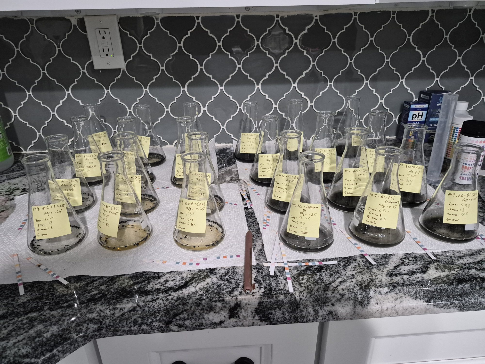
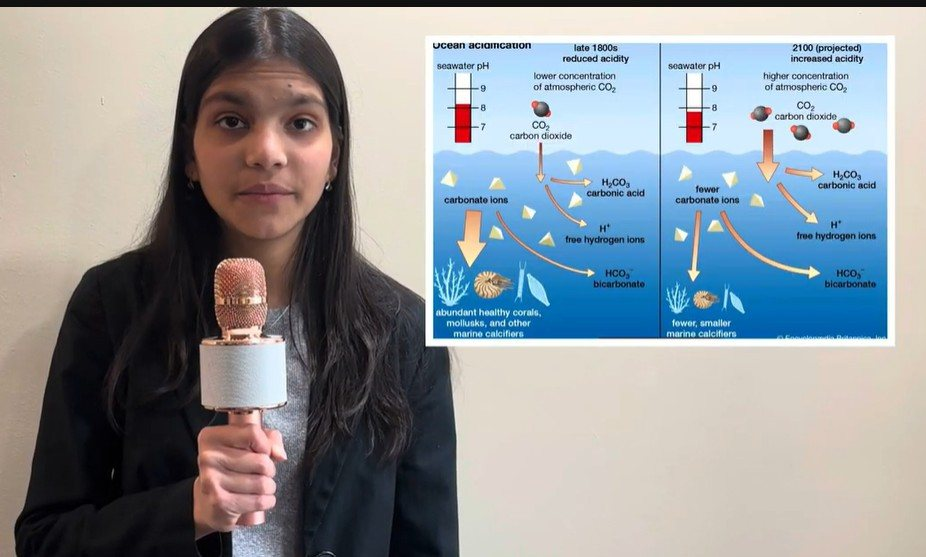

FTC
FLL
FTC
FLL
Lead Coder & Programming Team · 2020–Present
Read more
FIRST Robotics — FLL & FTC
From lead coder of an FLL team invited to the WPI US Open to the Lawrenceville FIRST Tech Challenge programming team — building autonomous control and computer-vision pipelines, and teaching robotics to middle schoolers.
MIT Day of AI · July 2026
Read more
MIT Solve — AI for a Better World
One of five national MIT Solve AI for a Better World winners, I presented an AI-powered water-quality node at the MIT Media Lab.
Peer-Reviewed Presentation · 2026
Read more
IEEE/ISEC — Comparative Biochar Water Analysis
Approved abstract: “Comparative Analysis of Softwood and Agricultural Waste Biochars for Heavy Metal and Nutrient Remediation in Water.” Presented at Princeton University.

IEEE/ISEC
NJWEA
Experimental research · 2026
Read more
Biochar Water Treatment
Bench tests comparing waste-derived biochars for water remediation, with pH, filtration and toxicity measurements.

Climate Tech
3M Challenge
Climate technology · 2025 concept
Read more
Autonomous Ocean pH Buoy
A sensor-driven buoy concept designed to detect low water pH and dispense calcium carbonate in response.
Biomedical Research & AI
Read more
Biomedical & AI Scientific Research
Stanford AIMI clinical AI research, computational drug discovery with AutoDock Vina, Harvard-mentored molecular biology wet lab, and Cambridge cancer genomics research.
Health Technology
Read more
MoniVitals: Equitable Vitals Monitor & App
I brought MoniVitals to our local farmers market and senior outreach events, offering neighbors a free check of their critical vitals in under a minute.
Health Technology
Read more
Community Field Screening & Senior Care Deployment
Deployed MoniVitals across local New Jersey farmers markets and senior outreach events, conducting over 100 free vital screenings for community elders and underserved families.
Health Technology
Read more
Hardware Prototype, Custom Enclosure & ESP32 Microcontroller
Engineered custom 3D printed housing, integrating MAX30102 optical sensor, MLX90614 infrared thermopile, OLED display, and rechargeable lithium-polymer power circuit.
 Flute
Piano
Writing & Performing Arts
Flute
Piano
Writing & Performing Arts
Writing & Performing Arts
Read more
Writing & Performing Arts
Essays, poetry and science journalism, from an international essay commendation to Scholastic Art & Writing recognition, alongside jazz-band flute, piano Grand Prize, technical theater and a gallery of visual art.
School & Community
Read more
School & Community
Leadership, service and public speaking.